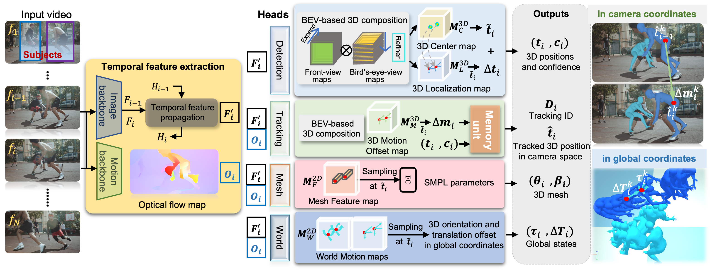
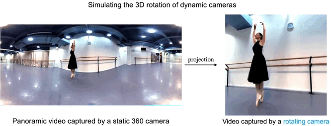
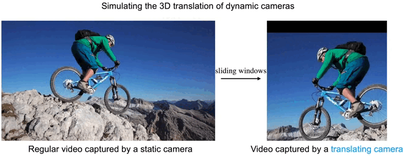
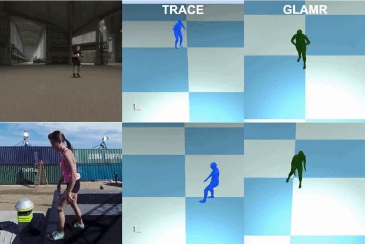

1Harbin Institute of Technology
2Explore Academy of JD.com
3HiDream.ai Inc.
4Max Planck Institute for Intelligent Systems
IEEE/CVF Conf. on Computer Vision and Pattern Recognition (CVPR) 2023
Although the estimation of 3D human pose and shape (HPS) is rapidly progressing, current methods still cannot reliably estimate moving humans in global coordinates, which is critical for many applications. This is particularly challenging when the camera is also moving, entangling human and camera motion. To address these issues, we adopt a novel 5D representation (space, time, and identity) that enables end-to-end reasoning about people in scenes. Our method, called TRACE, introduces several novel architectural components. Most importantly, it uses two new "maps" to reason about the 3D trajectory of people over time in camera, and world, coordinates. An additional memory unit enables persistent tracking of people even during long occlusions. TRACE is the first one-stage method to jointly recover and track 3D humans in global coordinates from dynamic cameras. By training it end-to-end, and using full image information, TRACE achieves state-of-the-art performance on tracking and HPS benchmarks. The code and dataset are released for research purposes.
Overview

Our goal is to simultaneously recover the 3D pose, shape, identity, and trajectory of each subject in global coordinates. To achieve this, TRACE first extracts temporal features and then decodes each sub-task with a separate head network.First, via two parallel backbones, TRACE encodes the video and its motion into temporal image feature maps F`i and motion feature maps Oi.
The Detection and Tracking branches take these features and perform multi-subject tracking to recover the 3D human trajectory in camera coordinates.
Unlike BEV, our detection method takes temporal image features F`i as input.
It uses the features to detect the 3D human positions ti and their confidence ci for all people in frame fi.
The Mesh branch regresses all the human mesh parameters, in SMPL format, from the input Feature maps.
Unlike BEV, this branch takes both temporal image features and motion features.
Details of the Detection branch.

Details of the Tracking branch.
The combined features (F`i, Oi) are fed to our novel Tracking branch to estimate the 3D Motion Offset map, indicating the 3D position change of each subject across frames. The new Memory Unit takes the 3D detection and its 3D motion offset as input. It then determines the subject identities and builds human trajectories ti of the K subjects in camera coordinates. Note that, like BEV, our detection branch finds all the people in the video frames but our goal is to track only the K input subjects. Consequently, the memory unit filters out detected people who do not match the subject trajectories.
The Mesh branch regresses all the human mesh parameters, in SMPL format, from the temporal feature maps.
Finally, to estimate subject trajectories in world coordinates, the novel World branch estimates a world motion map, representing the 3D orientation τi and 3D translation offset ΔΤi of the K subjects in global coordinates. Starting with the 3D position of the subjects in the first frame in camera coordinates, we accumulate the 3D translation offsets ΔΤi to obtain the global 3D trajectory Τ in global coordinates.

Even with a powerful 5D representation, we still lack in-the-wild data for training and evaluation of global human trajectory estimation.
However, collecting global human trajectory and camera poses for natural videos captured by dynamic cameras (DC-videos) is difficult.
Therefore, we create a new dataset, DynaCam, by simulating camera motions to convert in-the-wild videos captured by static cameras to DC-videos.


How to simulate a moving camera using videos captured by static cameras?
Demos
Qualitative comparison to previous SOTA methods.
Citation
@InProceedings{TRACE,
author = {Sun, Yu and Bao, Qian and Liu, Wu and Mei, Tao and Black, Michael J.},
title = {{TRACE: 5D Temporal Regression of Avatars with Dynamic Cameras in 3D Environments}},
booktitle = {IEEE/CVF Conf.~on Computer Vision and Pattern Recognition (CVPR)},
month = June,
year = {2023}}
Acknowledgement
This work was supported by the National Key R&D Program of China under Grand No. 2020AAA0103800.MJB Disclosure: https://files.is.tue.mpg.de/black/CoI_CVPR_2023.txt
This project page is modified from this amazing page.